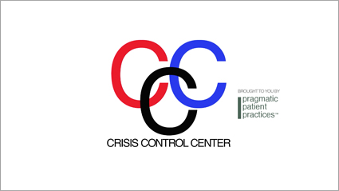

|
'The Interview' (2013) is a scripted exchange of a scripted exchange gone wrong between Pragmatic Patient Practices founder Anne-Marie Fitzalbert and interviewer Paul Christian Rogers about the company, her motivations, and the nature of their products. |
||||
 |
Crisis Control Center™ (CCC): The Crisis Control Center™ enables clients to give back, at least that's what the promotional video claims. This call center apparently receives calls from those in the midst of a crisis and through a systematic categorization of that crisis, without bothering with the details of the issue itself until the end, will solve the problem with one of ten scripted responses. |